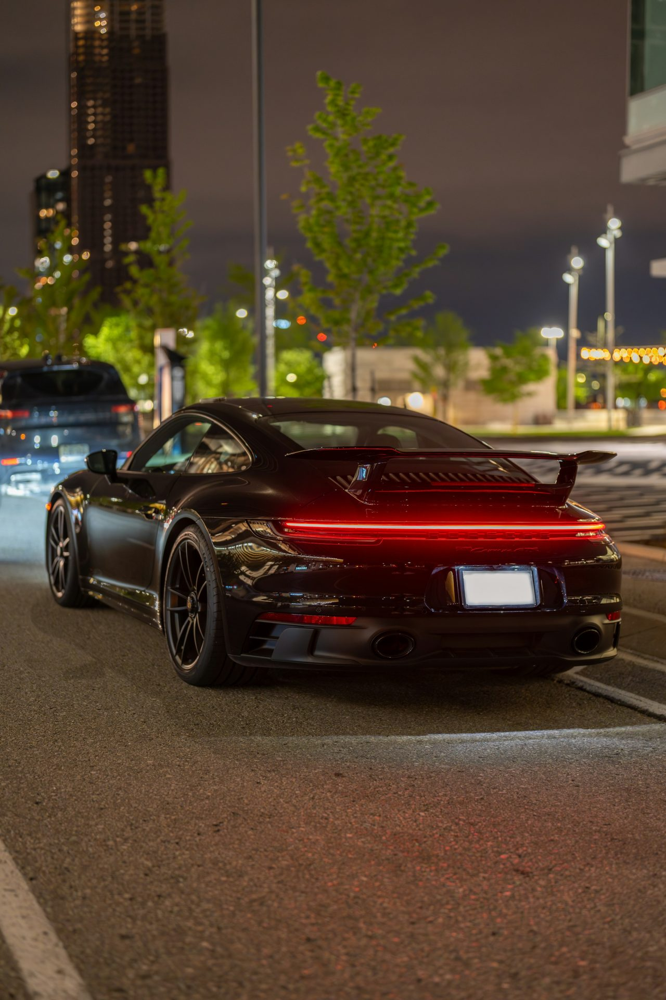
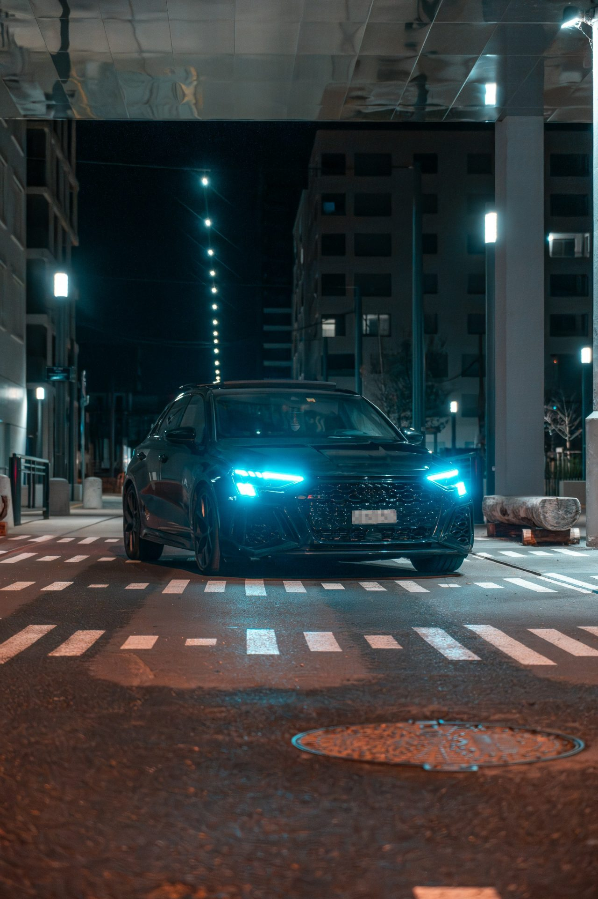
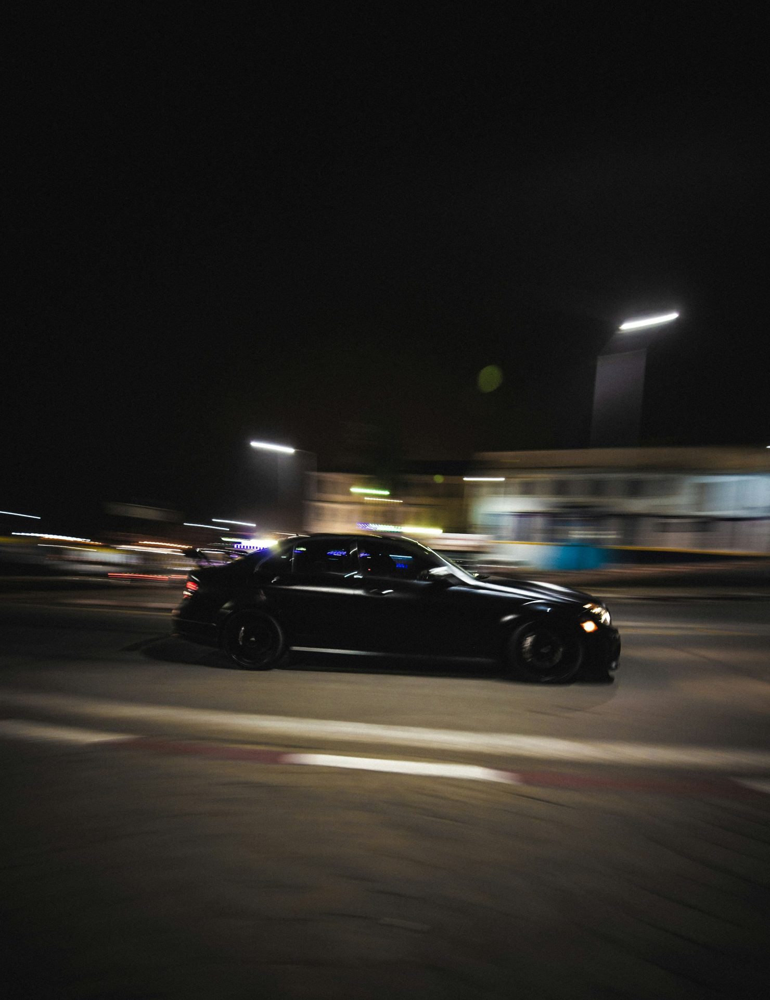
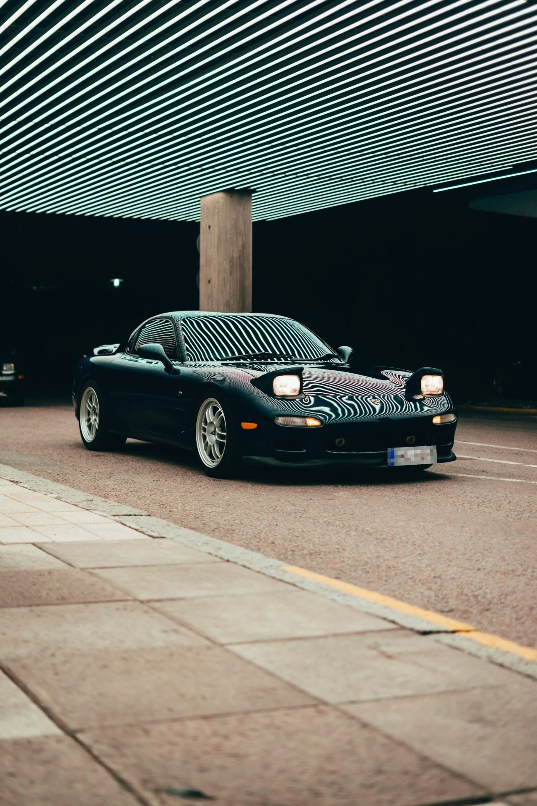
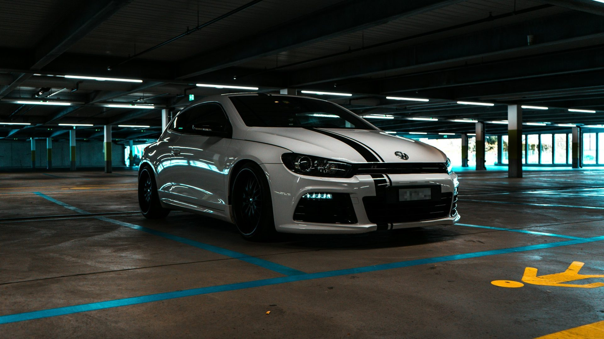

SPEED CLUB 2.0 · Style-Tile · Modul M4.1
Schwarzer Grund, echte Nachtfotos, weiße Schrift. Autos sprechen Archivo, Menschen sprechen Inter. Rot wirkt wie ein Bremslicht: selten, und dann mit Bedeutung.
Standard-Theme · dunkel

Porsche 911
Porsche · 911 · 992
VEH-01 · Das Foto steht in jedem Theme auf dunkler Bühne · Identität in onPhoto.primary ab der Textsicherheitslinie der Kontrastprüfung · scrim.top hinter den schwebenden Bedienelementen · Foto: Franco Debartolo, Unsplash License
Zwei Stimmen: Autos sprechen Archivo, Menschen sprechen Inter. Zahlen sind Helden und immer tabellarisch.
display.title · Archivo SemiExpanded 600
BMW M3 Competition
BMW · M3 Competition · G80
SpecStrip · hero.numeral Archivo Condensed 600, tabellarische Ziffern · Einheiten in label.unit · Herkunft als caption · auf dem Handy 2 × 2
title.1 · Inter Display 600 · body · Inter 400
Seit dem Frühjahr in meiner Garage. Verbaut sind ein KW-V3-Gewindefahrwerk, eine Titan-Abgasanlage von Akrapovič und Michelin Pilot Sport Cup 2 auf den originalen Schmiederädern. Unter der Woche Alltag, am Wochenende Eifel.
Tonale Flächen statt Schatten, Haarlinien statt Rahmen. Rot gehört dem einen gefüllten Button pro Screen.
Text primär · Namen, Werte, Überschriften
Text sekundär · Einheiten, Metadaten
Text tertiär · Herkunft, Hinweise
state.success · state.warning · state.info · entsättigt, nur Signal, nie Dekoration · Fehler und löschende Aktionen in Akzentfarbe
ListGroup · Fläche 1, Radius 12, Haarlinie als Kante · Trennlinien bis zum Text eingerückt
Druck: Skalierung 0,97 mit spring.fast plus eine Tonebene, die mit effect.fast einblendet (state.pressed, auf dem Primär-Button und dem gewählten Chip state.pressedInverse). Bei reduzierter Bewegung bleibt nur der Ton.
Chip · Pille, callout · ausgewählt = invertiert (Text-primär-Fläche, Canvas-Schrift)

Audi RS3 Sportback

Mercedes-Benz C 63 AMG

Mazda RX‑7

VW Scirocco R
MediaCard Rail · 3:4, Radius 12 · Name als headline (2 Zeilen) · ohne Schatten und Rahmen
Echtes Schwarz für OLED · Flaggschiff-Fragment VEH-01
Helles Theme · Fotos bleiben auf dunkler Bühne